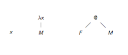
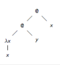

- 𝜆.M is function mapping of x to M
- 𝜆x.square x is function mapping of x to square x
- F M is application of function F to argument M
 
@ is an application. λx - x is equivalent to writing λx.x.
-
application is associative to the left:
-
(M N P) —> ((M N) P)
-
-
outermost parentheses are omitted
-
M N P —> (M N P)
-
-
lambda extends to the right as far as possible
-
𝜆x.M N —> 𝜆x.(M N)
-
-
combining lambdas is possible
-
𝜆xy.M —> 𝜆x.𝜆y.M
-
-
start with most nested lambda
-
(𝜆x.𝜆y.M) —> 𝜆x.(𝜆y.M))
-
reduces function with several arguments to functions with single arguments
- f: x => x+x —> 𝜆x.x+x
- g: (x,y) => x+y —> 𝜆x.𝜆y.x+y
x is bound by the first 𝜆x above it in the term tree (bolded)
- 𝜆x.x
- 𝜆x.x x
- (𝜆x.x)x
- 𝜆x.y x
variables that are not bound are free (such as y in the last example above)
M[x := N] means: result of replacing all free x in M by N
- x[x := N] = N
- a[x := N] = a
- (P Q)[x := N] = (P[x := N]) (Q[x := N])
- (𝜆x.P)[x := N] = 𝜆x.P
- (𝜆y.P)[x := N] = 𝜆y.(P[y := N]) if x ≠ y
renaming bound variables (in case of possible name clashes)
- 𝜆x.x = 𝜆y.y
- (𝜆x.y)[y := x] = 𝜆z.x
P =α Q only if Q can be obtained from P by finitely many changes of bound variables in context
beta-reduction (dynamic):
- (𝜆x.x)y —>β y
- (𝜆x.x)y —>β y
- (𝜆x.xz)y —>β yz
- (𝜆x.z)y —>β z
In general: (𝜆x.M)N —>β M[x := N]